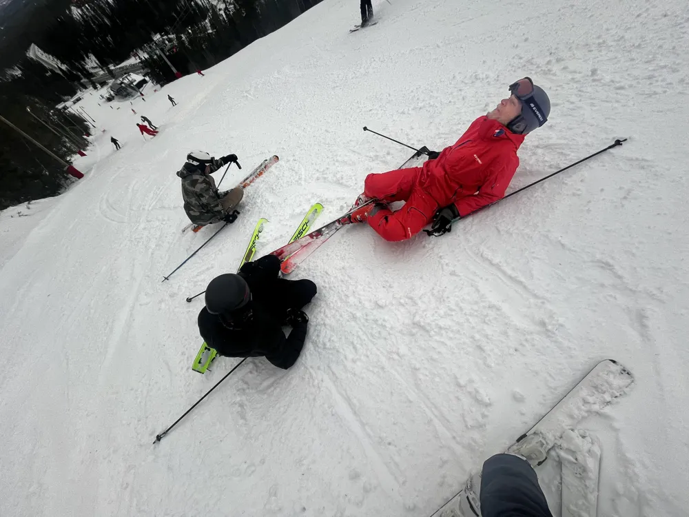

Insändare

Lärare begår mordförsök på elever under skolresa
Det är torsdag den 12e mars långt uppe i Jämtlands skogar, backe 12 "väst" i vemdalsskalet. Eleverna har haft en fin och lärorik dag, men det kom att ändras drastiskt. Precis när de var påväg till afterski bestämde sig en av lärarna för att här minsann skulle det inte festas. Läraren tar sats och åker rakt in i två ovetande elever som flyger som bowlingkäglor. "Strike!" utropar läraren med glädje. Efter flertal försök har han fångat eleverna när de är som mest sårbara och trötta.
Skoter tillkallades och de båda eleverna fördes till sjukhus där de nu behandlas med livshotande skador. Texten uppdateras.